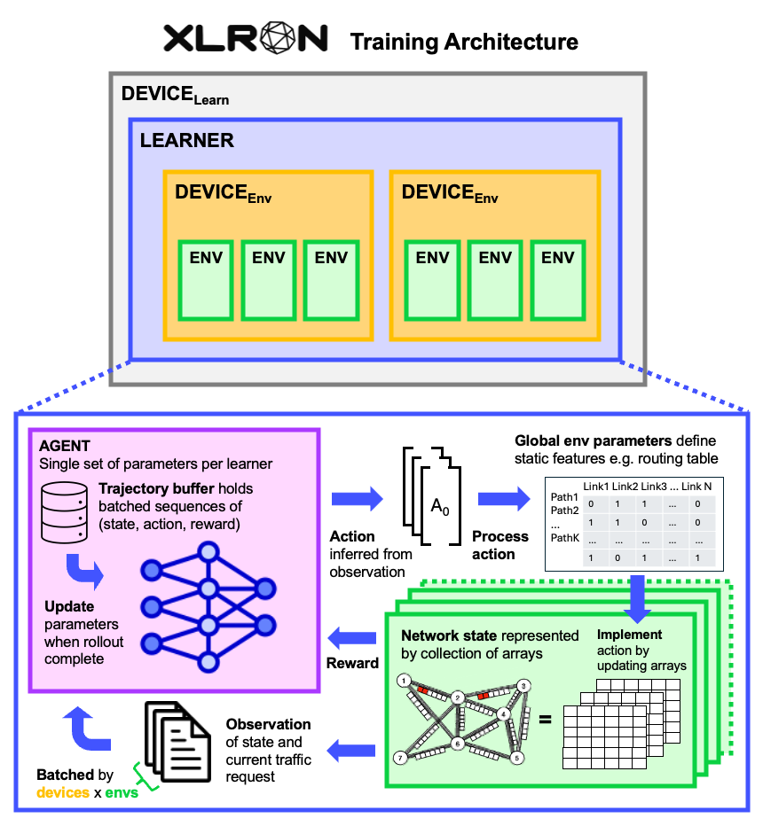

Understanding XLRON
This page provides an overview of the conceptual underpinnings of XLRON and descriptions of its more advanced features. It explains how it is different from other network simulators that are reliant on standard graph libraries such as networkx, and instead uses an array-based approach to represent the network state. This allows JIT-compilation using JAX, parallelisation on GPU, and consequently fast generation of state transitions and reduced training time.
For a primer on how to begin training and evaluating agents, jump to section 5 of this document or see the quick start guide.
1. Functional programming and JAX
XLRON is built using the JAX high-performance array computing framework. JAX is designed for use with functional programs - programs which are defined by applying and composing pure functions. This functional paradigm allows JAX programs to be JIT (Just In Time)-compiled to XLA (Accelerated Linear Algebra) and run on GPU or TPU hardware.
How does this affect XLRON? While programming in JAX has many advantages, it also imposes constraints on how to program. These constraints are necessary for JAX programs to be compiled and run on GPU/TPU/XPU. This means that the code for XLRON environments is in a different style to that of other network simulators, which are often object-oriented with standard control flow and rely on graph libraries such as networkx.
The chief constraints that XLRON obeys to be compatible with JAX are:
- Pure functions: Functions must be pure, meaning that they have no side effects and return the same output for the same input.
- Static array shapes: Array shapes must be known at compile time and immutable.
- No Python control flow: JAX does not support Python's built-in
forloops, and instead requires the use ofjax.lax.scanorjax.lax.fori_loopfor iteration. Similarly, JAX does not support Python's built-inifstatements, and instead requires the use ofjax.lax.condfor branching.
The JAX documentation (https://jax.readthedocs.io/en/latest/) is excellent and provides a comprehensive guide to these constraints and how to work with them.
2. Training architecture: Devices, Learners, Environments
To use XLRON, it helps to understand the logical structure of a typical training loop and have a mental picture of how the different components interact. The diagram below shows the main components of a training loop in XLRON:

The upper section of the diagram details the logical components of the parallelisation scheme: DEVICELEARN, LEARNER, DEVICEENV, and ENV.
When specifying a training run using XLRON, the number of learners, devices, and environments are specified using the --NUM_LEARNERS, --NUM_DEVICES, and --NUM_ENVS flags respectively. Each learner represents a single set of neural network parameters (i.e. the AGENT), the machinery required to train them e.g. optimiser and trajectory buffer, and the environments with which they interact. Each device represents a single accelerator device (CPU or GPU or TPU) that is used to run the learner. There can be multiple learners per device. Within a single learner are multiple parallel environments (ENV), that represent the optical network to be simulated. Each ENV is a separate instance of the environment, with its own state but fixed environment parameters that are common to the learner (see next section). A learner can have its environments spread across multiple devices or co-located on a single device.
This parallelisation scheme offers flexibility in the degree of parallelisation and use of multiple devices, with multiple learners permitting parallel training of distinct agents with different hyperparameters and/or random seeds, for the purposes of hyperaparameter tuning or meta-learning.
The lower section of the diagram shows the details of the training loop within a single LEARNER that comprises 1 or more parallel environments (ENV) and a single set of neural network parameters (AGENT). The agent-environment interation is shown in the central box, with the agent selecting actions based on its observations of the current state of the environment, and the environment transitioning to a new state based on the action selected and any stochastic transition dynamics (e.g. the arrival and departure times of new connection requests).
The batch size for the update step for a single learner is
NUM_DEVICES x NUM_ENVS x ROLLOUT_LENGTH
where ROLLOUT_LENGTH is the number of steps in a trajectory before an update is performed. This batch size can then be subdivided into multiple minibatches for training the neural network parameters, however this may be less stable due to updates becoming more off-policy.
We recommend Barto and Sutton's authoritative textbook on RL for a comprehensive introduction to the field: Reinforcement Learning: An Introduction.
3. Environment state and parameters
In order to satisfy the constraints of JAX, XLRON environments are implemented as a series of pure functions that take a state and params as input, and return an updated state as output. (Other arguments may also be passed to the functions e.g. pseudo random number generator keys). Both the state and the parameters are defined as custom dataclasses. Each of the main environments supported by XLRON (RWA, RSA, RMSA, DeepRMSA, RWALightpathReuse, VONE) has a custom state and parameters. Both state and parameters are defined as flax.struct.dataclass objects.
The environment state represents the current state of our network including currently active traffic requests, occupancy of spectral slots on links, and other relevant information that can change over the course of an episode. The state is updated by the environment's step() transition function.
The environment parameters represent the parameters of the environment, such as the topology of the network, the capacity of links, the number of slots on each link, and other relevant information. The parameters are fixed and do not change during the course of an episode. Parameters are specified as static arguments to functions, to indicate their values are known at compile time.
4. Data initialisation
To satisfy the constraint of static array shapes, XLRON environments are initialised with a fixed number of slots on each link, and a fixed number of resources at each node. This is done by specifying the number of slots and resources as parameters to the environment. The number of slots and resources are then used to initialise arrays of zeros to represent the occupancy of slots on links and the remaining resources at nodes. These arrays are then passed as part of the environment state.
4.1 Routing representation
In order to capture the topological information of the network in array form, the k-shortest paths between each node pair on the network are calculated and the constituent links of each path are encoded as a binary array for each row of path_link_array.
4.2 Key data structures
We list here the key data structures used in the XLRON environments. This not an exhaustive list but gives an overview of the main data structures used.
For RSAEnv (including the RMSA and RWA problems), the following data structures are used:
path_link_array: inparams. Each row is a binary arraylink_slot_array: Binary array to represent occupancy of slots on links. 0 for free, -1 for occupied.link_slot_departure_array: Contains departure times of services occupying slots. Time is set as negative when service is first initialised then set to positive once checked to be valid and finalised.request_array: Contains newly arrived request in format (source, datarate, destination)
For RWALightpathReuseEnv, in addition to the data structures used in RSAEnv, the following data structures are used:
path_index_array: Contains indices of lightpaths currently in use on slots.path_capacity_array: Contains maximum capacity of each lightpath (source-dest node pair and route)link_capacity_array: Contains remaining capacity of lightpath on each link-slot
For VONEEnv, in addition to the data structures used in RSAEnv, the following data structures are used:
node_capacity_array: Contains remaining capacity of each nodenode_resource_array: Contains remaining resources of each nodenode_departure_array: Contains departure times of each node
DeepRMSAEnv is a child class of RSAEnv and uses the same data structures as RSAEnv, with an action and observation space that is compatible with the DeepRMSA paper.
5. Environment transitions
The environment transitions are implemented as a series of pure functions that take a state and params as input, and return an updated state as output. The main functions are step() and reset(). The step() function is called by the agent to transition the environment from one state to the next, based on the action selected by the agent. The reset() function is called to reset the environment to its initial state at the start of a new episode.
In this section we describe in detail the steps involved in the step() function for each environment.
5.1 Implement action
After an action is inferred by the agent from the observation, the action is implemented in the environment. The action is a single digit that represents the index of the path to be used for the new connection request (from 0 to k-1) and the slot to be used on each link of the path (from 0 to num_slots-1). The action is implemented by updating the link_slot_array and link_slot_departure_array arrays to reflect the new connection request. The number of frequency slot units (FSU) occupied by the connections request is determined by the required datarate and the highest available modulation format for the connection, usually determined by maximum reach from the modulation_format_array in the params, but can be determined by available GSNR in more advanced environments.
5.2 Check
The action is valid if the slots on the path are free and the request can be accommodated on the path, e.g. any element of the link-slot-array is = -2 (meaning two active connections occupy the same FSU), then the action is invalid. Otherwise, the action is valid. Additional checks are required for more advanced environments. RWALightpathReuseEnv requires checking that the lightpath has sufficient capacity to accommodate the request, and VONEEnv requires checking that the node has sufficient resources to accommodate the request.
5.3 Finalise / Undo
If the action is valid, the departure time array is updated to set the new request times to positive values. If the action is invalid, the departure time array has the new request times added back to the initial slots, so as to reset their values to the departure time of the already-occupying request. Same for the other relevant arrays. For more advanced environments, a copy of the previous state arrays are held in state at all times, such that the state can be reset to the previous state if the action is invalid.
5.4 Reward
The reward is calculated on the basis of the reward function, which can be customised in-code but has predefined options accessed through the --reward-type flag, such as:
service: +1 for success -1 for failbitrate: Return+/-(requested bitrate / maximum requested bitrate)for success/fail
N.B. The connection request arrival and departure times are generated according to Poisson distributions described by the arrival rate and departure rates, respectively, as is common practice in the modelling of dynamic optical networks. The network load in Erlangs is the product of mean arrival rate and mean holding time, which gives the mean number of active connections on a non-blocking network.
N.B. The return values of the step() and reset() methods differ for XLRON compared to other gym-style environments ((observation, state, reward, done, info) vs. (observation, reward, terminated, truncated, info)). To match the gym API exactly for use with other RL libraries such as stable-baselines3, use the GymnaxToGymWrapper from the gymnax library.
6. Training an agent
XLRON contains an implementation of Proximal Policy Optimization (PPO) as the main RL algorithm. PPO is a policy gradient method that is computationally efficient and has been used to achieve state-of-the-art results in a number of domains. It is appropriate for use in environments with stochastic environment dynamics (such as optical network resource allocation problems), since it can retain stochasticity in its policy. The PPO implementation in XLRON is based on the excellent PureJaxRL. Users can modify ppo.py if they want to experiment with different RL algorithms, or find many more options in the Stoix library.
Training is done using the train.py script, which is a wrapper around the train function in train.py. The script takes a number of commandline arguments to specify the environment, the agent, the training hyperparameters, and other settings. The script then calls the train function with these arguments. See the quick start guide for example commands. For multi-device training, use the train_multidevice.py script.
N.B. Evaluation runs of trained models or heuristics follow the same DEVICE-LEARNER-DEVICE-ENV structure as described in section 2. Evaluation is accessed through the training script using the flags --EVAL_MODEL or --EVAL_HEURISTIC.
Other topics
Invalid Action Masking
Invalid action masking is a technique used to prevent the agent from selecting invalid actions. This is particularly important in the context of optical network resource allocation problems, where the action space is large and many actions are invalid. Each XLRON environment provides a method action_mask to generate a mask of valid actions for a given state. This mask can be used to prevent the agent from selecting invalid actions.
Invalid action masking is activated by using the flag --ACTION_MASKING when running the 'train.py' script.
Slot aggregation
Slot aggregation is a technique used to reduce the action space in the context of optical network resource allocation problems. It is particularly useful for the RWA problem, where the action space is large and many actions are invalid. Each XLRON environment provides a method aggregate_slots to aggregate slots on links. This groups the available slots into blocks of size N. The agent then selects a block of slots as an action, and first fit allocation is used to select the initial slot for the service within the selected block of slots.
Slot aggregation is activated by using the flag --aggregate_slots=N when running the 'train.py' script.
Weights & Biases (wandb) integration
Weights and Biases is a tool for experiment tracking, model management, and hyperparameter optimization. It's free for individual use and is a great way to keep track of your experiments and share them with others. To set up your account and start using it with xlron, follow the steps here: https://docs.wandb.ai/quickstart/
Hyperparameters (e.g. learning rate, batch size, rollout length, discount factor (gamma), generalized advantage estimation (GAE) lambda factor, number of MLP layers, number of hidden units, number of parallel environments, etc.) are extremely important for the success of any deep learning model and especially for reinforcement learning, which introduces additional parameters.
XLRON features support for wandb experiment tracking and hyperparameter sweeps. The following commandline flags, when running the 'train.py' script, will enable wandb integration:
--[no]WANDB: Use wandb
(default: 'false')
--EXPERIMENT_NAME: Name of experiment (equivalent to run name in wandb)
(auto-generated based on other flags if unspecified)
(default: '')
--PROJECT: Name of project (same as experiment name if unspecified)
(default: '')
--DOWNSAMPLE_FACTOR: Downsample factor to reduce data uploaded to wandb
(default: '1')
(an integer)
--[no]SAVE_MODEL: Save model (will be saved to --MODEL_PATH locally and uploaded to wandb if --WANDB is True)
(default: 'false')
To run a hyperparameter sweep, you must define a sweep configuration file (e.g. sweep.yaml) and run the sweep using the wandb sweep command. We provide an example sweep configuration file here: example_sweep_config.yaml. Once you have defined your sweep configuration file, you can initialise the sweep using the following command:
wandb sweep sweep.yaml
W&B then provides you with a sweep ID in the output of the command, which you can use to launch a sweep agent using the following command:
wandb agent <SWEEP_ID>
You can run multiple sweep agents in parallel to speed up the search for optimal hyperparameters. Each agent will run a different configuration of hyperparameters, following the "method" defined in your sweep configuration file, e.g. "random", "grid", or "bayes".
See wandb docs for more details on launching sweeps: https://docs.wandb.ai/guides/sweeps
Learning rate schedules
XLRON supports diverse learning rate schedules for the agent. See the flags for learning rate schedules in the commandline options section.
GNNs with Jraph
We use the Jraph library for graph neural networks in JAX to implement the policy and/or value networks of our agent, while retaining the advantages of JIT compilation and accelerator hardware. Jraph agents are now fully implemented and accessible through the --USE_GNN flag. The GNN agent is a multi-layer graph neural network with message passing and aggregation layers. We also make Graph Attention Network (GAT) models available. The GNN agent is compatible with all environments. The GNN agent is implemented in agents.py and can be modified to experiment with different architectures. The GNN agent is trained using the same train.py script as a MLP agent, with the --USE_GNN flag enabled.